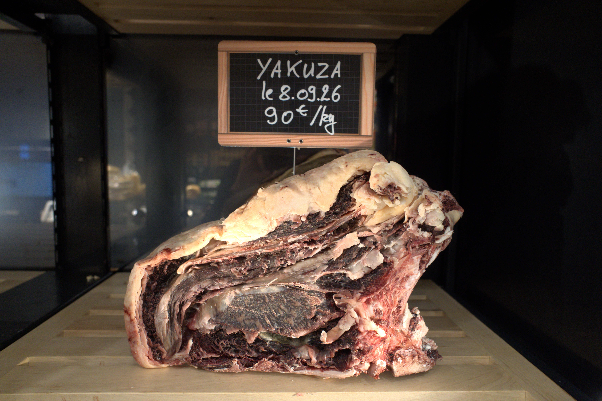
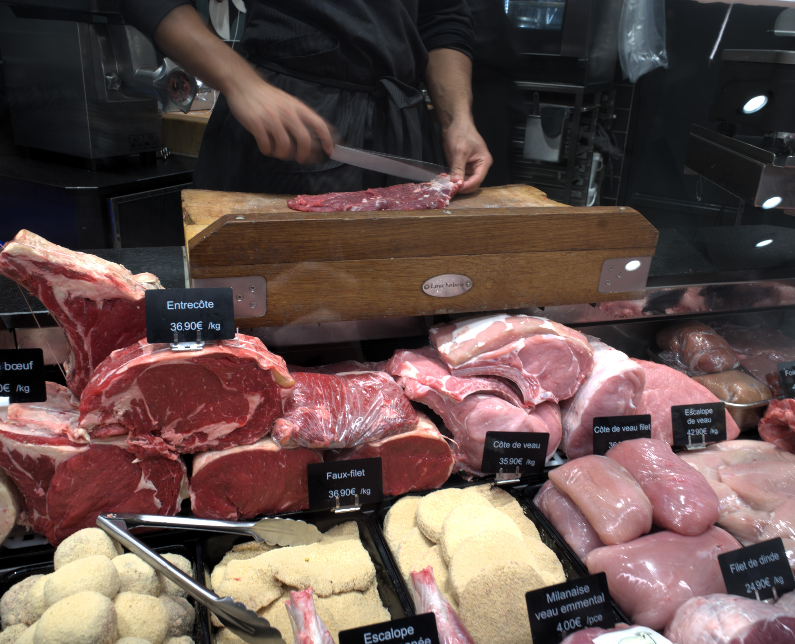
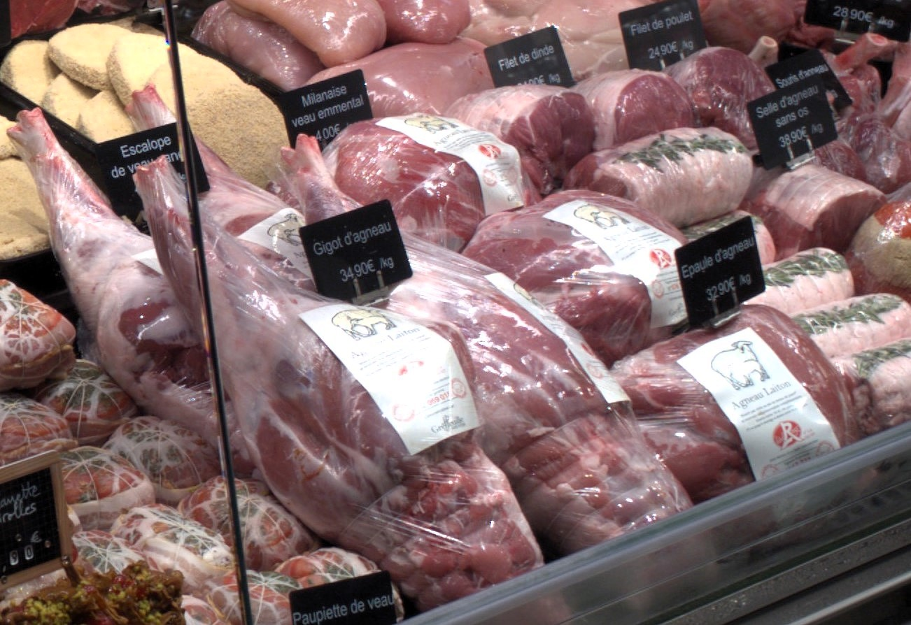

Bœuf maturé
Des pièces sélectionnées et maturées avec soin.
Notre sélection
Découvrez les principales familles de produits proposées dans nos boucheries.

Des pièces sélectionnées et maturées avec soin.

La qualité d’une sélection limousine.

La sélection Allaiton : des agneaux d’exception.